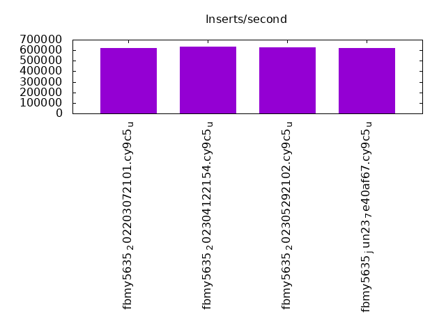
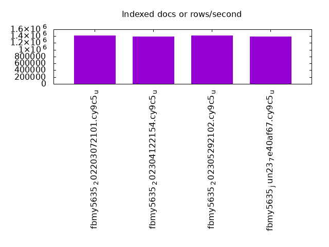
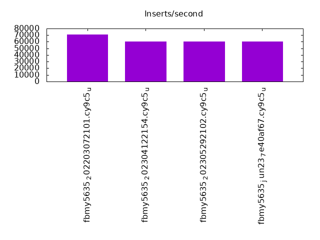
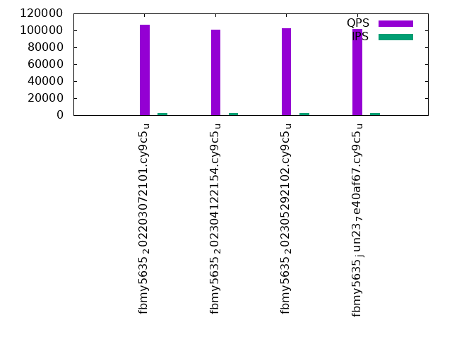
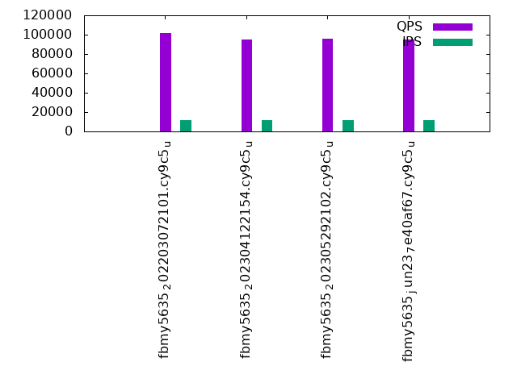
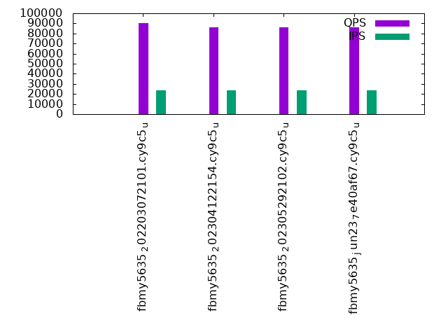

This is a report for the insert benchmark with 480M docs and 24 client(s). It is generated by scripts (bash, awk, sed) and Tufte might not be impressed. An overview of the insert benchmark is here and a short update is here. Below, by DBMS, I mean DBMS+version.config. An example is my8020.c10b40 where my means MySQL, 8020 is version 8.0.20 and c10b40 is the name for the configuration file.
The test server has 80 cores with hyperthreads enabled, 256G RAM and fast SSD. The benchmark was run with 24 client and there were 1 or 3 connections per client (1 for queries or inserts without rate limits, 1+1 for rate limited inserts+deletes). There are 24 tables, with a client per table. It loads 20M rows per-table without secondary indexes, creates secondary indexes, then inserts 50M rows per-table with a delete per insert to avoid growing the table. The read-write tests were run for 7200 seconds each. The read+write tests were skipped. The database is cached by RocksDB.
The tested DBMS are:
The numbers are inserts/s for l.i0 and l.i1, indexed docs (or rows) /s for l.x and queries/s for q*.2. The values are the average rate over the entire test for inserts (IPS) and queries (QPS). The range of values for IPS and QPS is split into 3 parts: bottom 25%, middle 50%, top 25%. Values in the bottom 25% have a red background, values in the top 25% have a green background and values in the middle have no color. A gray background is used for values that can be ignored because the DBMS did not sustain the target insert rate. Red backgrounds are not used when the minimum value is within 80% of the max value.
| dbms | l.i0 | l.x | l.i1 | q100.1 | q500.1 | q1000.1 |
|---|---|---|---|---|---|---|
| fbmy5635_202203072101.cy9c5_u | 618557 | 1424629 | 70985 | 106908 | 101746 | 90064 |
| fbmy5635_202304122154.cy9c5_u | 630749 | 1395640 | 60162 | 101073 | 95302 | 85857 |
| fbmy5635_202305292102.cy9c5_u | 625000 | 1416224 | 60277 | 102143 | 95512 | 86372 |
| fbmy5635_jun23_7e40af67.cy9c5_u | 622568 | 1391594 | 60193 | 101537 | 94932 | 86164 |
This table has relative throughput, throughput for the DBMS relative to the DBMS in the first line, using the absolute throughput from the previous table. Values less than 0.95 have a yellow background. Values greater than 1.05 have a blue background.
| dbms | l.i0 | l.x | l.i1 | q100.1 | q500.1 | q1000.1 |
|---|---|---|---|---|---|---|
| fbmy5635_202203072101.cy9c5_u | 1.00 | 1.00 | 1.00 | 1.00 | 1.00 | 1.00 |
| fbmy5635_202304122154.cy9c5_u | 1.02 | 0.98 | 0.85 | 0.95 | 0.94 | 0.95 |
| fbmy5635_202305292102.cy9c5_u | 1.01 | 0.99 | 0.85 | 0.96 | 0.94 | 0.96 |
| fbmy5635_jun23_7e40af67.cy9c5_u | 1.01 | 0.98 | 0.85 | 0.95 | 0.93 | 0.96 |
This lists the average rate of inserts/s for the tests that do inserts concurrent with queries. For such tests the query rate is listed in the table above. The read+write tests are setup so that the insert rate should match the target rate every second. Cells that are not at least 95% of the target have a red background to indicate a failure to satisfy the target.
| dbms | q100.1 | q500.1 | q1000.1 |
|---|---|---|---|
| fbmy5635_202203072101.cy9c5_u | 2389 | 11948 | 23907 |
| fbmy5635_202304122154.cy9c5_u | 2389 | 11947 | 23904 |
| fbmy5635_202305292102.cy9c5_u | 2390 | 11948 | 23907 |
| fbmy5635_jun23_7e40af67.cy9c5_u | 2390 | 11947 | 23907 |
| target | 2400 | 12000 | 24000 |
l.i0: load without secondary indexes. Graphs for performance per 1-second interval are here.
Average throughput:
Insert response time histogram: each cell has the percentage of responses that take <= the time in the header and max is the max response time in seconds. For the max column values in the top 25% of the range have a red background and in the bottom 25% of the range have a green background. The red background is not used when the min value is within 80% of the max value.
| dbms | 256us | 1ms | 4ms | 16ms | 64ms | 256ms | 1s | 4s | 16s | gt | max |
|---|---|---|---|---|---|---|---|---|---|---|---|
| fbmy5635_202203072101.cy9c5_u | 0.337 | 73.511 | 26.111 | 0.041 | 0.095 | ||||||
| fbmy5635_202304122154.cy9c5_u | 0.184 | 77.986 | 21.788 | 0.042 | 0.105 | ||||||
| fbmy5635_202305292102.cy9c5_u | 0.163 | 77.255 | 22.539 | 0.001 | 0.042 | 0.116 | |||||
| fbmy5635_jun23_7e40af67.cy9c5_u | 0.134 | 76.420 | 23.402 | 0.002 | 0.042 | 0.094 |
Performance metrics for the DBMS listed above. Some are normalized by throughput, others are not. Legend for results is here.
ips qps rps rmbps wps wmbps rpq rkbpq wpi wkbpi csps cpups cspq cpupq dbgb1 dbgb2 rss maxop p50 p99 tag 618557 0 0 0.0 2565.8 307.7 0.000 0.000 0.004 0.509 551758 41.1 0.892 53 15.6 16.7 5.0 0.095 26374 18083 480m.fbmy5635_202203072101.cy9c5_u 630749 0 0 0.0 2154.8 257.9 0.000 0.000 0.003 0.419 262848 35.9 0.417 46 15.1 16.2 4.1 0.105 26973 17682 480m.fbmy5635_202304122154.cy9c5_u 625000 0 0 0.0 2126.0 255.1 0.000 0.000 0.003 0.418 306553 36.6 0.490 47 15.1 16.2 4.1 0.116 27073 20881 480m.fbmy5635_202305292102.cy9c5_u 622568 0 0 0.0 2151.9 258.4 0.000 0.000 0.003 0.425 304619 37.0 0.489 48 15.2 16.3 4.1 0.094 26873 19281 480m.fbmy5635_jun23_7e40af67.cy9c5_u
l.x: create secondary indexes.
Average throughput:
Performance metrics for the DBMS listed above. Some are normalized by throughput, others are not. Legend for results is here.
ips qps rps rmbps wps wmbps rpq rkbpq wpi wkbpi csps cpups cspq cpupq dbgb1 dbgb2 rss maxop p50 p99 tag 1424629 0 30 0.2 1894.5 207.8 0.000 0.000 0.001 0.149 33748 28.5 0.024 16 32.4 33.5 45.5 0.002 NA NA 480m.fbmy5635_202203072101.cy9c5_u 1395640 0 29 0.2 1755.1 191.3 0.000 0.000 0.001 0.140 32284 28.1 0.023 16 32.3 33.5 39.6 0.003 NA NA 480m.fbmy5635_202304122154.cy9c5_u 1416224 0 29 0.2 1785.7 194.7 0.000 0.000 0.001 0.141 33374 28.3 0.024 16 32.3 33.5 40.5 0.002 NA NA 480m.fbmy5635_202305292102.cy9c5_u 1391594 0 29 0.2 1768.0 192.8 0.000 0.000 0.001 0.142 34174 28.5 0.025 16 32.3 33.4 39.2 0.002 NA NA 480m.fbmy5635_jun23_7e40af67.cy9c5_u
l.i1: continue load after secondary indexes created. Graphs for performance per 1-second interval are here.
Average throughput:
Insert response time histogram: each cell has the percentage of responses that take <= the time in the header and max is the max response time in seconds. For the max column values in the top 25% of the range have a red background and in the bottom 25% of the range have a green background. The red background is not used when the min value is within 80% of the max value.
| dbms | 256us | 1ms | 4ms | 16ms | 64ms | 256ms | 1s | 4s | 16s | gt | max |
|---|---|---|---|---|---|---|---|---|---|---|---|
| fbmy5635_202203072101.cy9c5_u | nonzero | 0.051 | 32.222 | 67.724 | 0.003 | 0.174 | |||||
| fbmy5635_202304122154.cy9c5_u | 0.031 | 11.951 | 88.014 | 0.004 | 0.204 | ||||||
| fbmy5635_202305292102.cy9c5_u | 0.027 | 12.414 | 87.555 | 0.004 | 0.164 | ||||||
| fbmy5635_jun23_7e40af67.cy9c5_u | 0.030 | 12.359 | 87.608 | 0.003 | 0.149 |
Delete response time histogram: each cell has the percentage of responses that take <= the time in the header and max is the max response time in seconds. For the max column values in the top 25% of the range have a red background and in the bottom 25% of the range have a green background. The red background is not used when the min value is within 80% of the max value.
| dbms | 256us | 1ms | 4ms | 16ms | 64ms | 256ms | 1s | 4s | 16s | gt | max |
|---|---|---|---|---|---|---|---|---|---|---|---|
| fbmy5635_202203072101.cy9c5_u | 0.001 | 0.052 | 37.347 | 62.597 | 0.004 | 0.238 | |||||
| fbmy5635_202304122154.cy9c5_u | nonzero | 0.032 | 13.340 | 86.624 | 0.004 | 0.219 | |||||
| fbmy5635_202305292102.cy9c5_u | nonzero | 0.028 | 13.986 | 85.982 | 0.004 | nonzero | 0.272 | ||||
| fbmy5635_jun23_7e40af67.cy9c5_u | nonzero | 0.031 | 13.923 | 86.042 | 0.004 | 0.209 |
Performance metrics for the DBMS listed above. Some are normalized by throughput, others are not. Legend for results is here.
ips qps rps rmbps wps wmbps rpq rkbpq wpi wkbpi csps cpups cspq cpupq dbgb1 dbgb2 rss maxop p50 p99 tag 70985 0 122 1.4 1941.1 231.9 0.002 0.020 0.027 3.346 144884 16.4 2.041 185 37.6 37.7 177.1 0.174 2947 2647 480m.fbmy5635_202203072101.cy9c5_u 60162 0 45 0.8 1472.2 175.3 0.001 0.014 0.024 2.984 119015 15.3 1.978 203 37.9 38.0 177.3 0.204 2498 2248 480m.fbmy5635_202304122154.cy9c5_u 60277 0 46 0.9 1471.3 174.4 0.001 0.014 0.024 2.963 118875 15.7 1.972 208 41.0 41.1 177.1 0.164 2547 2248 480m.fbmy5635_202305292102.cy9c5_u 60193 0 45 0.8 1472.5 171.0 0.001 0.014 0.024 2.909 120067 15.7 1.995 209 37.9 38.0 177.2 0.149 2498 2248 480m.fbmy5635_jun23_7e40af67.cy9c5_u
q100.1: range queries with 100 insert/s per client. Graphs for performance per 1-second interval are here.
Average throughput:
Query response time histogram: each cell has the percentage of responses that take <= the time in the header and max is the max response time in seconds. For max values in the top 25% of the range have a red background and in the bottom 25% of the range have a green background. The red background is not used when the min value is within 80% of the max value.
| dbms | 256us | 1ms | 4ms | 16ms | 64ms | 256ms | 1s | 4s | 16s | gt | max |
|---|---|---|---|---|---|---|---|---|---|---|---|
| fbmy5635_202203072101.cy9c5_u | 84.234 | 15.765 | 0.001 | nonzero | nonzero | 0.032 | |||||
| fbmy5635_202304122154.cy9c5_u | 75.297 | 24.702 | 0.001 | nonzero | nonzero | 0.025 | |||||
| fbmy5635_202305292102.cy9c5_u | 77.035 | 22.964 | 0.001 | nonzero | nonzero | nonzero | 0.066 | ||||
| fbmy5635_jun23_7e40af67.cy9c5_u | 76.289 | 23.710 | 0.001 | nonzero | nonzero | 0.023 |
Insert response time histogram: each cell has the percentage of responses that take <= the time in the header and max is the max response time in seconds. For max values in the top 25% of the range have a red background and in the bottom 25% of the range have a green background. The red background is not used when the min value is within 80% of the max value.
| dbms | 256us | 1ms | 4ms | 16ms | 64ms | 256ms | 1s | 4s | 16s | gt | max |
|---|---|---|---|---|---|---|---|---|---|---|---|
| fbmy5635_202203072101.cy9c5_u | 99.998 | 0.002 | 0.009 | ||||||||
| fbmy5635_202304122154.cy9c5_u | 99.961 | 0.039 | 0.010 | ||||||||
| fbmy5635_202305292102.cy9c5_u | 99.577 | 0.423 | nonzero | 0.026 | |||||||
| fbmy5635_jun23_7e40af67.cy9c5_u | 97.599 | 2.401 | 0.014 |
Delete response time histogram: each cell has the percentage of responses that take <= the time in the header and max is the max response time in seconds. For max values in the top 25% of the range have a red background and in the bottom 25% of the range have a green background. The red background is not used when the min value is within 80% of the max value.
| dbms | 256us | 1ms | 4ms | 16ms | 64ms | 256ms | 1s | 4s | 16s | gt | max |
|---|---|---|---|---|---|---|---|---|---|---|---|
| fbmy5635_202203072101.cy9c5_u | 0.118 | 99.874 | 0.006 | 0.003 | nonzero | 0.069 | |||||
| fbmy5635_202304122154.cy9c5_u | 0.001 | 99.980 | 0.017 | 0.002 | 0.054 | ||||||
| fbmy5635_202305292102.cy9c5_u | 99.776 | 0.220 | 0.003 | 0.001 | 0.082 | ||||||
| fbmy5635_jun23_7e40af67.cy9c5_u | 98.253 | 1.746 | 0.001 | 0.019 |
Performance metrics for the DBMS listed above. Some are normalized by throughput, others are not. Legend for results is here.
ips qps rps rmbps wps wmbps rpq rkbpq wpi wkbpi csps cpups cspq cpupq dbgb1 dbgb2 rss maxop p50 p99 tag 2389 106908 5 0.0 90.4 10.2 0.000 0.000 0.038 4.379 488396 31.8 4.568 238 35.8 37.6 179.5 0.032 4428 3886 480m.fbmy5635_202203072101.cy9c5_u 2389 101073 7 0.2 76.1 8.4 0.000 0.002 0.032 3.607 452698 31.9 4.479 252 37.1 38.9 179.5 0.025 4236 3724 480m.fbmy5635_202304122154.cy9c5_u 2390 102143 8 0.2 76.0 8.4 0.000 0.002 0.032 3.598 457435 31.9 4.478 250 37.1 38.9 179.6 0.066 4252 3756 480m.fbmy5635_202305292102.cy9c5_u 2390 101537 9 0.2 75.3 8.3 0.000 0.002 0.031 3.561 455417 32.0 4.485 252 37.1 38.9 179.4 0.023 4220 3740 480m.fbmy5635_jun23_7e40af67.cy9c5_u
q500.1: range queries with 500 insert/s per client. Graphs for performance per 1-second interval are here.
Average throughput:
Query response time histogram: each cell has the percentage of responses that take <= the time in the header and max is the max response time in seconds. For max values in the top 25% of the range have a red background and in the bottom 25% of the range have a green background. The red background is not used when the min value is within 80% of the max value.
| dbms | 256us | 1ms | 4ms | 16ms | 64ms | 256ms | 1s | 4s | 16s | gt | max |
|---|---|---|---|---|---|---|---|---|---|---|---|
| fbmy5635_202203072101.cy9c5_u | 77.153 | 22.845 | 0.001 | nonzero | nonzero | nonzero | 0.089 | ||||
| fbmy5635_202304122154.cy9c5_u | 65.169 | 34.829 | 0.002 | nonzero | nonzero | nonzero | 0.084 | ||||
| fbmy5635_202305292102.cy9c5_u | 65.515 | 34.482 | 0.002 | nonzero | nonzero | nonzero | 0.083 | ||||
| fbmy5635_jun23_7e40af67.cy9c5_u | 64.584 | 35.413 | 0.002 | nonzero | nonzero | nonzero | 0.128 |
Insert response time histogram: each cell has the percentage of responses that take <= the time in the header and max is the max response time in seconds. For max values in the top 25% of the range have a red background and in the bottom 25% of the range have a green background. The red background is not used when the min value is within 80% of the max value.
| dbms | 256us | 1ms | 4ms | 16ms | 64ms | 256ms | 1s | 4s | 16s | gt | max |
|---|---|---|---|---|---|---|---|---|---|---|---|
| fbmy5635_202203072101.cy9c5_u | nonzero | 99.647 | 0.350 | 0.002 | 0.001 | 0.085 | |||||
| fbmy5635_202304122154.cy9c5_u | 25.640 | 63.948 | 10.410 | 0.002 | 0.093 | ||||||
| fbmy5635_202305292102.cy9c5_u | 29.927 | 65.411 | 4.661 | nonzero | 0.095 | ||||||
| fbmy5635_jun23_7e40af67.cy9c5_u | 19.908 | 73.823 | 6.268 | 0.002 | 0.103 |
Delete response time histogram: each cell has the percentage of responses that take <= the time in the header and max is the max response time in seconds. For max values in the top 25% of the range have a red background and in the bottom 25% of the range have a green background. The red background is not used when the min value is within 80% of the max value.
| dbms | 256us | 1ms | 4ms | 16ms | 64ms | 256ms | 1s | 4s | 16s | gt | max |
|---|---|---|---|---|---|---|---|---|---|---|---|
| fbmy5635_202203072101.cy9c5_u | 0.081 | 99.679 | 0.229 | 0.008 | 0.002 | 0.088 | |||||
| fbmy5635_202304122154.cy9c5_u | nonzero | 27.637 | 62.984 | 9.375 | 0.004 | 0.097 | |||||
| fbmy5635_202305292102.cy9c5_u | 31.497 | 64.330 | 4.171 | 0.002 | 0.097 | ||||||
| fbmy5635_jun23_7e40af67.cy9c5_u | 21.939 | 72.500 | 5.558 | 0.002 | 0.108 |
Performance metrics for the DBMS listed above. Some are normalized by throughput, others are not. Legend for results is here.
ips qps rps rmbps wps wmbps rpq rkbpq wpi wkbpi csps cpups cspq cpupq dbgb1 dbgb2 rss maxop p50 p99 tag 11948 101746 28 0.2 381.4 44.4 0.000 0.002 0.032 3.807 480879 33.5 4.726 263 36.2 36.4 184.9 0.089 4236 3676 480m.fbmy5635_202203072101.cy9c5_u 11947 95302 16 0.2 331.7 38.4 0.000 0.002 0.028 3.292 444941 34.0 4.669 285 37.5 37.8 184.8 0.084 3995 3421 480m.fbmy5635_202304122154.cy9c5_u 11948 95512 21 0.2 327.3 37.5 0.000 0.002 0.027 3.215 447091 34.1 4.681 286 37.5 37.8 184.8 0.083 3980 3421 480m.fbmy5635_202305292102.cy9c5_u 11947 94932 15 0.2 326.0 37.5 0.000 0.002 0.027 3.210 444301 34.1 4.680 287 37.5 37.8 184.8 0.128 3964 3405 480m.fbmy5635_jun23_7e40af67.cy9c5_u
q1000.1: range queries with 1000 insert/s per client. Graphs for performance per 1-second interval are here.
Average throughput:
Query response time histogram: each cell has the percentage of responses that take <= the time in the header and max is the max response time in seconds. For max values in the top 25% of the range have a red background and in the bottom 25% of the range have a green background. The red background is not used when the min value is within 80% of the max value.
| dbms | 256us | 1ms | 4ms | 16ms | 64ms | 256ms | 1s | 4s | 16s | gt | max |
|---|---|---|---|---|---|---|---|---|---|---|---|
| fbmy5635_202203072101.cy9c5_u | 54.251 | 45.744 | 0.005 | nonzero | nonzero | nonzero | 0.088 | ||||
| fbmy5635_202304122154.cy9c5_u | 44.771 | 55.217 | 0.012 | nonzero | nonzero | nonzero | 0.093 | ||||
| fbmy5635_202305292102.cy9c5_u | 45.933 | 54.055 | 0.012 | nonzero | nonzero | nonzero | 0.097 | ||||
| fbmy5635_jun23_7e40af67.cy9c5_u | 45.460 | 54.527 | 0.013 | nonzero | nonzero | nonzero | 0.076 |
Insert response time histogram: each cell has the percentage of responses that take <= the time in the header and max is the max response time in seconds. For max values in the top 25% of the range have a red background and in the bottom 25% of the range have a green background. The red background is not used when the min value is within 80% of the max value.
| dbms | 256us | 1ms | 4ms | 16ms | 64ms | 256ms | 1s | 4s | 16s | gt | max |
|---|---|---|---|---|---|---|---|---|---|---|---|
| fbmy5635_202203072101.cy9c5_u | 15.395 | 83.700 | 0.905 | 0.001 | 0.094 | ||||||
| fbmy5635_202304122154.cy9c5_u | 1.575 | 8.796 | 89.625 | 0.004 | 0.106 | ||||||
| fbmy5635_202305292102.cy9c5_u | 2.164 | 11.358 | 86.476 | 0.002 | 0.105 | ||||||
| fbmy5635_jun23_7e40af67.cy9c5_u | 1.713 | 10.915 | 87.370 | 0.002 | 0.103 |
Delete response time histogram: each cell has the percentage of responses that take <= the time in the header and max is the max response time in seconds. For max values in the top 25% of the range have a red background and in the bottom 25% of the range have a green background. The red background is not used when the min value is within 80% of the max value.
| dbms | 256us | 1ms | 4ms | 16ms | 64ms | 256ms | 1s | 4s | 16s | gt | max |
|---|---|---|---|---|---|---|---|---|---|---|---|
| fbmy5635_202203072101.cy9c5_u | 0.002 | 16.787 | 82.377 | 0.832 | 0.002 | 0.101 | |||||
| fbmy5635_202304122154.cy9c5_u | nonzero | 1.592 | 9.723 | 88.679 | 0.005 | 0.106 | |||||
| fbmy5635_202305292102.cy9c5_u | 2.129 | 12.336 | 85.532 | 0.003 | 0.115 | ||||||
| fbmy5635_jun23_7e40af67.cy9c5_u | 1.685 | 11.872 | 86.440 | 0.003 | 0.121 |
Performance metrics for the DBMS listed above. Some are normalized by throughput, others are not. Legend for results is here.
ips qps rps rmbps wps wmbps rpq rkbpq wpi wkbpi csps cpups cspq cpupq dbgb1 dbgb2 rss maxop p50 p99 tag 23907 90064 83 0.7 696.1 81.6 0.001 0.007 0.029 3.496 467751 36.1 5.194 321 37.6 38.8 186.6 0.088 3724 3181 480m.fbmy5635_202203072101.cy9c5_u 23904 85857 49 0.5 616.0 71.9 0.001 0.006 0.026 3.079 433169 37.3 5.045 348 38.3 39.5 186.4 0.093 3565 2957 480m.fbmy5635_202304122154.cy9c5_u 23907 86372 131 0.9 614.5 70.8 0.002 0.011 0.026 3.034 435482 37.4 5.042 346 38.6 39.9 186.5 0.097 3581 2957 480m.fbmy5635_202305292102.cy9c5_u 23907 86164 58 0.6 615.3 71.9 0.001 0.008 0.026 3.078 434606 37.4 5.044 347 38.6 39.9 186.6 0.076 3580 2957 480m.fbmy5635_jun23_7e40af67.cy9c5_u
l.i0: load without secondary indexes
Performance metrics for all DBMS, not just the ones listed above. Some are normalized by throughput, others are not. Legend for results is here.
ips qps rps rmbps wps wmbps rpq rkbpq wpi wkbpi csps cpups cspq cpupq dbgb1 dbgb2 rss maxop p50 p99 tag 618557 0 0 0.0 2565.8 307.7 0.000 0.000 0.004 0.509 551758 41.1 0.892 53 15.6 16.7 5.0 0.095 26374 18083 480m.fbmy5635_202203072101.cy9c5_u 630749 0 0 0.0 2154.8 257.9 0.000 0.000 0.003 0.419 262848 35.9 0.417 46 15.1 16.2 4.1 0.105 26973 17682 480m.fbmy5635_202304122154.cy9c5_u 625000 0 0 0.0 2126.0 255.1 0.000 0.000 0.003 0.418 306553 36.6 0.490 47 15.1 16.2 4.1 0.116 27073 20881 480m.fbmy5635_202305292102.cy9c5_u 622568 0 0 0.0 2151.9 258.4 0.000 0.000 0.003 0.425 304619 37.0 0.489 48 15.2 16.3 4.1 0.094 26873 19281 480m.fbmy5635_jun23_7e40af67.cy9c5_u
l.x: create secondary indexes
Performance metrics for all DBMS, not just the ones listed above. Some are normalized by throughput, others are not. Legend for results is here.
ips qps rps rmbps wps wmbps rpq rkbpq wpi wkbpi csps cpups cspq cpupq dbgb1 dbgb2 rss maxop p50 p99 tag 1424629 0 30 0.2 1894.5 207.8 0.000 0.000 0.001 0.149 33748 28.5 0.024 16 32.4 33.5 45.5 0.002 NA NA 480m.fbmy5635_202203072101.cy9c5_u 1395640 0 29 0.2 1755.1 191.3 0.000 0.000 0.001 0.140 32284 28.1 0.023 16 32.3 33.5 39.6 0.003 NA NA 480m.fbmy5635_202304122154.cy9c5_u 1416224 0 29 0.2 1785.7 194.7 0.000 0.000 0.001 0.141 33374 28.3 0.024 16 32.3 33.5 40.5 0.002 NA NA 480m.fbmy5635_202305292102.cy9c5_u 1391594 0 29 0.2 1768.0 192.8 0.000 0.000 0.001 0.142 34174 28.5 0.025 16 32.3 33.4 39.2 0.002 NA NA 480m.fbmy5635_jun23_7e40af67.cy9c5_u
l.i1: continue load after secondary indexes created
Performance metrics for all DBMS, not just the ones listed above. Some are normalized by throughput, others are not. Legend for results is here.
ips qps rps rmbps wps wmbps rpq rkbpq wpi wkbpi csps cpups cspq cpupq dbgb1 dbgb2 rss maxop p50 p99 tag 70985 0 122 1.4 1941.1 231.9 0.002 0.020 0.027 3.346 144884 16.4 2.041 185 37.6 37.7 177.1 0.174 2947 2647 480m.fbmy5635_202203072101.cy9c5_u 60162 0 45 0.8 1472.2 175.3 0.001 0.014 0.024 2.984 119015 15.3 1.978 203 37.9 38.0 177.3 0.204 2498 2248 480m.fbmy5635_202304122154.cy9c5_u 60277 0 46 0.9 1471.3 174.4 0.001 0.014 0.024 2.963 118875 15.7 1.972 208 41.0 41.1 177.1 0.164 2547 2248 480m.fbmy5635_202305292102.cy9c5_u 60193 0 45 0.8 1472.5 171.0 0.001 0.014 0.024 2.909 120067 15.7 1.995 209 37.9 38.0 177.2 0.149 2498 2248 480m.fbmy5635_jun23_7e40af67.cy9c5_u
q100.1: range queries with 100 insert/s per client
Performance metrics for all DBMS, not just the ones listed above. Some are normalized by throughput, others are not. Legend for results is here.
ips qps rps rmbps wps wmbps rpq rkbpq wpi wkbpi csps cpups cspq cpupq dbgb1 dbgb2 rss maxop p50 p99 tag 2389 106908 5 0.0 90.4 10.2 0.000 0.000 0.038 4.379 488396 31.8 4.568 238 35.8 37.6 179.5 0.032 4428 3886 480m.fbmy5635_202203072101.cy9c5_u 2389 101073 7 0.2 76.1 8.4 0.000 0.002 0.032 3.607 452698 31.9 4.479 252 37.1 38.9 179.5 0.025 4236 3724 480m.fbmy5635_202304122154.cy9c5_u 2390 102143 8 0.2 76.0 8.4 0.000 0.002 0.032 3.598 457435 31.9 4.478 250 37.1 38.9 179.6 0.066 4252 3756 480m.fbmy5635_202305292102.cy9c5_u 2390 101537 9 0.2 75.3 8.3 0.000 0.002 0.031 3.561 455417 32.0 4.485 252 37.1 38.9 179.4 0.023 4220 3740 480m.fbmy5635_jun23_7e40af67.cy9c5_u
q500.1: range queries with 500 insert/s per client
Performance metrics for all DBMS, not just the ones listed above. Some are normalized by throughput, others are not. Legend for results is here.
ips qps rps rmbps wps wmbps rpq rkbpq wpi wkbpi csps cpups cspq cpupq dbgb1 dbgb2 rss maxop p50 p99 tag 11948 101746 28 0.2 381.4 44.4 0.000 0.002 0.032 3.807 480879 33.5 4.726 263 36.2 36.4 184.9 0.089 4236 3676 480m.fbmy5635_202203072101.cy9c5_u 11947 95302 16 0.2 331.7 38.4 0.000 0.002 0.028 3.292 444941 34.0 4.669 285 37.5 37.8 184.8 0.084 3995 3421 480m.fbmy5635_202304122154.cy9c5_u 11948 95512 21 0.2 327.3 37.5 0.000 0.002 0.027 3.215 447091 34.1 4.681 286 37.5 37.8 184.8 0.083 3980 3421 480m.fbmy5635_202305292102.cy9c5_u 11947 94932 15 0.2 326.0 37.5 0.000 0.002 0.027 3.210 444301 34.1 4.680 287 37.5 37.8 184.8 0.128 3964 3405 480m.fbmy5635_jun23_7e40af67.cy9c5_u
q1000.1: range queries with 1000 insert/s per client
Performance metrics for all DBMS, not just the ones listed above. Some are normalized by throughput, others are not. Legend for results is here.
ips qps rps rmbps wps wmbps rpq rkbpq wpi wkbpi csps cpups cspq cpupq dbgb1 dbgb2 rss maxop p50 p99 tag 23907 90064 83 0.7 696.1 81.6 0.001 0.007 0.029 3.496 467751 36.1 5.194 321 37.6 38.8 186.6 0.088 3724 3181 480m.fbmy5635_202203072101.cy9c5_u 23904 85857 49 0.5 616.0 71.9 0.001 0.006 0.026 3.079 433169 37.3 5.045 348 38.3 39.5 186.4 0.093 3565 2957 480m.fbmy5635_202304122154.cy9c5_u 23907 86372 131 0.9 614.5 70.8 0.002 0.011 0.026 3.034 435482 37.4 5.042 346 38.6 39.9 186.5 0.097 3581 2957 480m.fbmy5635_202305292102.cy9c5_u 23907 86164 58 0.6 615.3 71.9 0.001 0.008 0.026 3.078 434606 37.4 5.044 347 38.6 39.9 186.6 0.076 3580 2957 480m.fbmy5635_jun23_7e40af67.cy9c5_u
Insert response time histogram
256us 1ms 4ms 16ms 64ms 256ms 1s 4s 16s gt max tag 0.000 0.337 73.511 26.111 0.000 0.041 0.000 0.000 0.000 0.000 0.095 fbmy5635_202203072101.cy9c5_u 0.000 0.184 77.986 21.788 0.000 0.042 0.000 0.000 0.000 0.000 0.105 fbmy5635_202304122154.cy9c5_u 0.000 0.163 77.255 22.539 0.001 0.042 0.000 0.000 0.000 0.000 0.116 fbmy5635_202305292102.cy9c5_u 0.000 0.134 76.420 23.402 0.002 0.042 0.000 0.000 0.000 0.000 0.094 fbmy5635_jun23_7e40af67.cy9c5_u
TODO - determine whether there is data for create index response time
Insert response time histogram
256us 1ms 4ms 16ms 64ms 256ms 1s 4s 16s gt max tag 0.000 nonzero 0.051 32.222 67.724 0.003 0.000 0.000 0.000 0.000 0.174 fbmy5635_202203072101.cy9c5_u 0.000 0.000 0.031 11.951 88.014 0.004 0.000 0.000 0.000 0.000 0.204 fbmy5635_202304122154.cy9c5_u 0.000 0.000 0.027 12.414 87.555 0.004 0.000 0.000 0.000 0.000 0.164 fbmy5635_202305292102.cy9c5_u 0.000 0.000 0.030 12.359 87.608 0.003 0.000 0.000 0.000 0.000 0.149 fbmy5635_jun23_7e40af67.cy9c5_u
Delete response time histogram
256us 1ms 4ms 16ms 64ms 256ms 1s 4s 16s gt max tag 0.000 0.001 0.052 37.347 62.597 0.004 0.000 0.000 0.000 0.000 0.238 fbmy5635_202203072101.cy9c5_u 0.000 nonzero 0.032 13.340 86.624 0.004 0.000 0.000 0.000 0.000 0.219 fbmy5635_202304122154.cy9c5_u 0.000 nonzero 0.028 13.986 85.982 0.004 nonzero 0.000 0.000 0.000 0.272 fbmy5635_202305292102.cy9c5_u 0.000 nonzero 0.031 13.923 86.042 0.004 0.000 0.000 0.000 0.000 0.209 fbmy5635_jun23_7e40af67.cy9c5_u
Query response time histogram
256us 1ms 4ms 16ms 64ms 256ms 1s 4s 16s gt max tag 84.234 15.765 0.001 nonzero nonzero 0.000 0.000 0.000 0.000 0.000 0.032 fbmy5635_202203072101.cy9c5_u 75.297 24.702 0.001 nonzero nonzero 0.000 0.000 0.000 0.000 0.000 0.025 fbmy5635_202304122154.cy9c5_u 77.035 22.964 0.001 nonzero nonzero nonzero 0.000 0.000 0.000 0.000 0.066 fbmy5635_202305292102.cy9c5_u 76.289 23.710 0.001 nonzero nonzero 0.000 0.000 0.000 0.000 0.000 0.023 fbmy5635_jun23_7e40af67.cy9c5_u
Insert response time histogram
256us 1ms 4ms 16ms 64ms 256ms 1s 4s 16s gt max tag 0.000 0.000 99.998 0.002 0.000 0.000 0.000 0.000 0.000 0.000 0.009 fbmy5635_202203072101.cy9c5_u 0.000 0.000 99.961 0.039 0.000 0.000 0.000 0.000 0.000 0.000 0.010 fbmy5635_202304122154.cy9c5_u 0.000 0.000 99.577 0.423 nonzero 0.000 0.000 0.000 0.000 0.000 0.026 fbmy5635_202305292102.cy9c5_u 0.000 0.000 97.599 2.401 0.000 0.000 0.000 0.000 0.000 0.000 0.014 fbmy5635_jun23_7e40af67.cy9c5_u
Delete response time histogram
256us 1ms 4ms 16ms 64ms 256ms 1s 4s 16s gt max tag 0.000 0.118 99.874 0.006 0.003 nonzero 0.000 0.000 0.000 0.000 0.069 fbmy5635_202203072101.cy9c5_u 0.000 0.001 99.980 0.017 0.002 0.000 0.000 0.000 0.000 0.000 0.054 fbmy5635_202304122154.cy9c5_u 0.000 0.000 99.776 0.220 0.003 0.001 0.000 0.000 0.000 0.000 0.082 fbmy5635_202305292102.cy9c5_u 0.000 0.000 98.253 1.746 0.001 0.000 0.000 0.000 0.000 0.000 0.019 fbmy5635_jun23_7e40af67.cy9c5_u
Query response time histogram
256us 1ms 4ms 16ms 64ms 256ms 1s 4s 16s gt max tag 77.153 22.845 0.001 nonzero nonzero nonzero 0.000 0.000 0.000 0.000 0.089 fbmy5635_202203072101.cy9c5_u 65.169 34.829 0.002 nonzero nonzero nonzero 0.000 0.000 0.000 0.000 0.084 fbmy5635_202304122154.cy9c5_u 65.515 34.482 0.002 nonzero nonzero nonzero 0.000 0.000 0.000 0.000 0.083 fbmy5635_202305292102.cy9c5_u 64.584 35.413 0.002 nonzero nonzero nonzero 0.000 0.000 0.000 0.000 0.128 fbmy5635_jun23_7e40af67.cy9c5_u
Insert response time histogram
256us 1ms 4ms 16ms 64ms 256ms 1s 4s 16s gt max tag 0.000 nonzero 99.647 0.350 0.002 0.001 0.000 0.000 0.000 0.000 0.085 fbmy5635_202203072101.cy9c5_u 0.000 0.000 25.640 63.948 10.410 0.002 0.000 0.000 0.000 0.000 0.093 fbmy5635_202304122154.cy9c5_u 0.000 0.000 29.927 65.411 4.661 nonzero 0.000 0.000 0.000 0.000 0.095 fbmy5635_202305292102.cy9c5_u 0.000 0.000 19.908 73.823 6.268 0.002 0.000 0.000 0.000 0.000 0.103 fbmy5635_jun23_7e40af67.cy9c5_u
Delete response time histogram
256us 1ms 4ms 16ms 64ms 256ms 1s 4s 16s gt max tag 0.000 0.081 99.679 0.229 0.008 0.002 0.000 0.000 0.000 0.000 0.088 fbmy5635_202203072101.cy9c5_u 0.000 nonzero 27.637 62.984 9.375 0.004 0.000 0.000 0.000 0.000 0.097 fbmy5635_202304122154.cy9c5_u 0.000 0.000 31.497 64.330 4.171 0.002 0.000 0.000 0.000 0.000 0.097 fbmy5635_202305292102.cy9c5_u 0.000 0.000 21.939 72.500 5.558 0.002 0.000 0.000 0.000 0.000 0.108 fbmy5635_jun23_7e40af67.cy9c5_u
Query response time histogram
256us 1ms 4ms 16ms 64ms 256ms 1s 4s 16s gt max tag 54.251 45.744 0.005 nonzero nonzero nonzero 0.000 0.000 0.000 0.000 0.088 fbmy5635_202203072101.cy9c5_u 44.771 55.217 0.012 nonzero nonzero nonzero 0.000 0.000 0.000 0.000 0.093 fbmy5635_202304122154.cy9c5_u 45.933 54.055 0.012 nonzero nonzero nonzero 0.000 0.000 0.000 0.000 0.097 fbmy5635_202305292102.cy9c5_u 45.460 54.527 0.013 nonzero nonzero nonzero 0.000 0.000 0.000 0.000 0.076 fbmy5635_jun23_7e40af67.cy9c5_u
Insert response time histogram
256us 1ms 4ms 16ms 64ms 256ms 1s 4s 16s gt max tag 0.000 0.000 15.395 83.700 0.905 0.001 0.000 0.000 0.000 0.000 0.094 fbmy5635_202203072101.cy9c5_u 0.000 0.000 1.575 8.796 89.625 0.004 0.000 0.000 0.000 0.000 0.106 fbmy5635_202304122154.cy9c5_u 0.000 0.000 2.164 11.358 86.476 0.002 0.000 0.000 0.000 0.000 0.105 fbmy5635_202305292102.cy9c5_u 0.000 0.000 1.713 10.915 87.370 0.002 0.000 0.000 0.000 0.000 0.103 fbmy5635_jun23_7e40af67.cy9c5_u
Delete response time histogram
256us 1ms 4ms 16ms 64ms 256ms 1s 4s 16s gt max tag 0.000 0.002 16.787 82.377 0.832 0.002 0.000 0.000 0.000 0.000 0.101 fbmy5635_202203072101.cy9c5_u 0.000 nonzero 1.592 9.723 88.679 0.005 0.000 0.000 0.000 0.000 0.106 fbmy5635_202304122154.cy9c5_u 0.000 0.000 2.129 12.336 85.532 0.003 0.000 0.000 0.000 0.000 0.115 fbmy5635_202305292102.cy9c5_u 0.000 0.000 1.685 11.872 86.440 0.003 0.000 0.000 0.000 0.000 0.121 fbmy5635_jun23_7e40af67.cy9c5_u